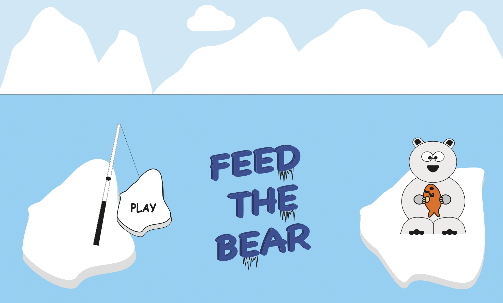
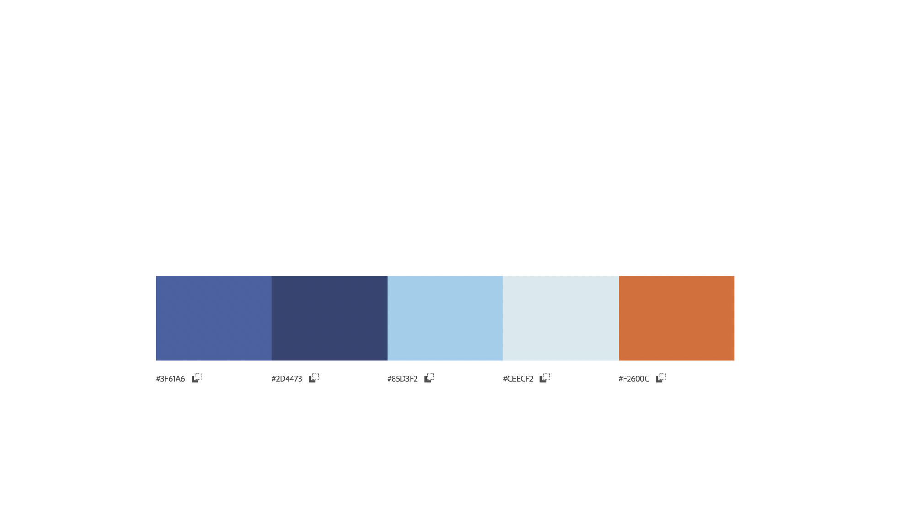
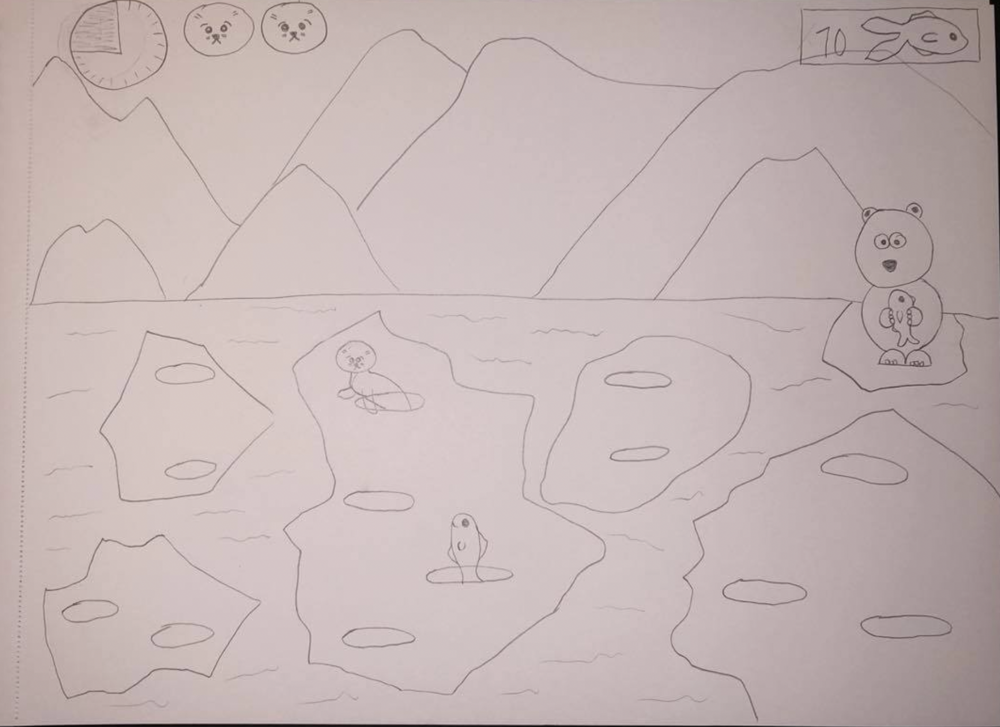
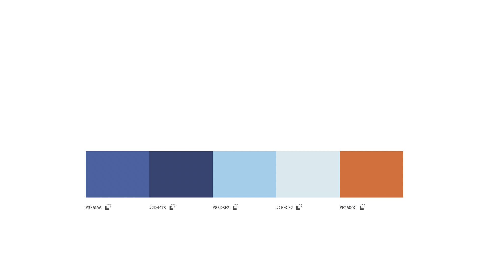
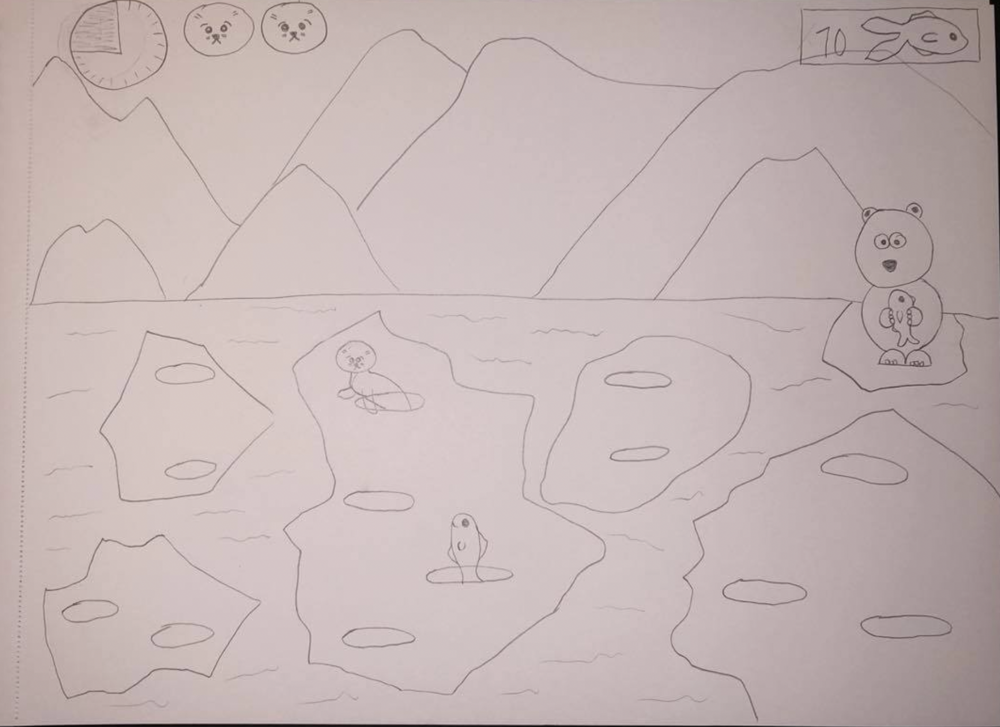

Grundlæggende web
I tema 4 - Grundlæggende animation, blev vi for første gang introduceret til Java Script. Igennem forløbet i dette tema fik vi en forståelse for hvad man kan bruge Java Script til når man programerer, hvorfor Java Script er uundværligt når an programerer idag og hvordan vi selv kunne bruge det sammen med CSS animationer, til vores eget spil som vi lavede. Vi fik til opgave at lave et animeret computerspil, som vi selv skulle opfinde og designe. For at kunne lave spillet har vi inden lært om aktivitets og statemachine diagrammer. Vi lærte om hvordan og hvad der engagerer brugeren som skal prøve spillet, bla. UI elementer, bagrundsdesign, firgurelementer osv. Derudover lavede vi også forskellige test og surveys på vores spil. Jeg lavede et spil som handlede om en sulten isbjørn og spillet foregår et koldt sted hvor der både er is og hav. Det gjaldt om at fange fisk til isbjørnen, sælerne faldt ned ovenfra himlen i spillet. Dog falder der også sæler ned fra himlen, og dem må man ikke trykke på, hvor så mister man et liv pr. sæl. Mister man 3 liv er det gameover. Selve spillet endte med et lidt barnligt/flat design look, som jeg kom frem til efter adskillelige skifter og tegninger, og til sidst rentegnede jeg og tegnede det hele i Adobe illustrator, som vi også blev introduceret til i dette tema.
Hvad Ville jeg gøre anderledes?
Selve designet i mit spil endte jeg med at være nogenlunde tilfreds med, selvom der altid kan være forbedringer. Jeg ville dog godt have ændret på måden mine spilelementer kommer ind i spillet, så de kom op af isen, istedet for at falde ned fra himlen. Derudover ville jeg gerne have haft et tredje spilelement, som skulle være det "dårlige" istedet for sælerne, da de for mange ville give bedre mening, da isbjørne i virkeligheden spiser sæler, og derfor er det svært at forstå at man i spillet ikke må ramme sælerne.
Dokumentation
 


